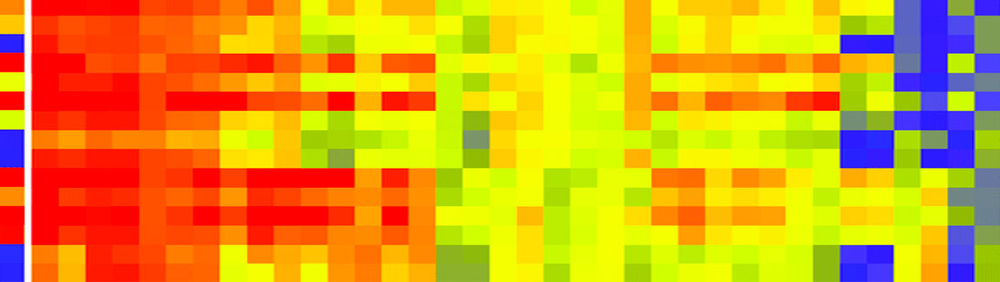

Developing a Self-Organizing Map (Part 1)
One of the first artificial neural networks I learned during my university stage was the Kohonen neural network, mainly known as SOM (Self-Organizing Map). This neural network was created by the scientist Teuvo Kohonen in the middle 80's. This is a quite simple and easy to learn neural network from a mathematical point of view, so this is grateful for those engineers with a weak background in mathematics.
SOM nets are unsupervised neural networks, it means that those allow us to create a classification map given a dataset without the need of knowing the existent myriad of classes among the data. A classification map is a bidimensional matrix of N-dimensional vectors, as a result of training the net with huge amounts of data taken from the training dataset. With a trained classification map we are able to classify input data. This is especially useful in those cases where we have to deal with a bunch of unknown data that must be classified or tagged in some way. SOM nets have a quite good performance, even with the most simple implementations.
The SOM net projects an N-dimensional dataset in a reduced dimension space. The projection is topological preserving, that is, the proximity among objects in the input space (N-dimensional) is approximately preserved in the output space (2-dimensional map). This process considerably reduces the dimensionality of the input data.

The first step of the SOM algorithm is the initialization of the map with random weight vector values. After the initialization the training loop begins. A sample vector is selected randomly from the dataset and the map of weight vectors is searched to find which weight best represents that sample. Each weight vector has neighboring weights that are close to it. The weight vector that is chosen is rewarded by being able to become more like that randomly selected sample vector. The rewared vector is known as the Best Matching Unit(BMU). The neighbors of that vector weight are also rewarded by being able to become more like the chosen sample vector. From this step the number of neighbors and how much each weight can learn decreases over time. From there this whole process is repeated thousands of times until all sample vectors are taken from the dataset and you consider the training process ends according to your criteria.
The steps of the training process are described bellow.
- Each weight vector of the map is initialized.
- A sample vector is chosen at random from the dataset.
- Every vector of the map is examined to calculate which vector weight is most like the input vector. The winning vector is commonly known as the Best Matching Unit (BMU).
- Then the neighbourhood of the BMU is calculated. The amount of neighbors decreases over time.
- The winning vector is rewarded with becoming more like the sample vector. The nighbors also become more like the sample vector. The closer a node is to the BMU, the more its weights get altered and the farther away the neighbor is from the BMU, the less it learns.
- Repeat the step 2 for N iterations.
Although this algorithm is quite simple, the most important thing is to clean and prepare the data prior to the training process to ensure good results. I briefly explained the steps of the SOM algorithm in a human language, but there are key parts that need to be explained in depth for a better understanding before start programming it. For example, how do we search the vector BMU given a sample vector? How is the neighboring BMU calculated? How do we visualize the classification map once it is trained? The second part of this post have the answers to this questions and the corresponding implementations in C language.